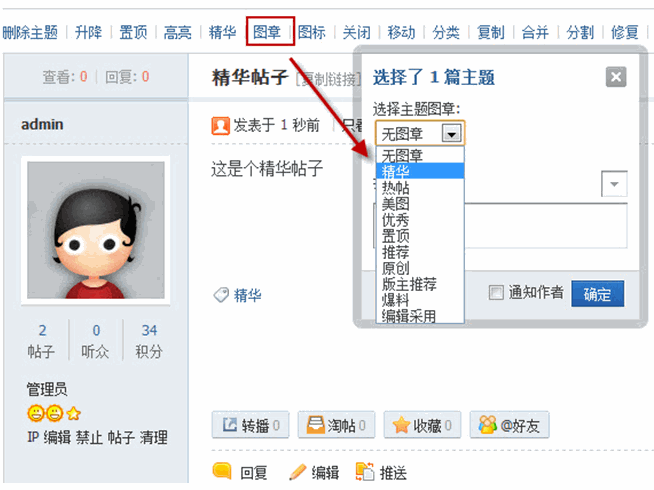
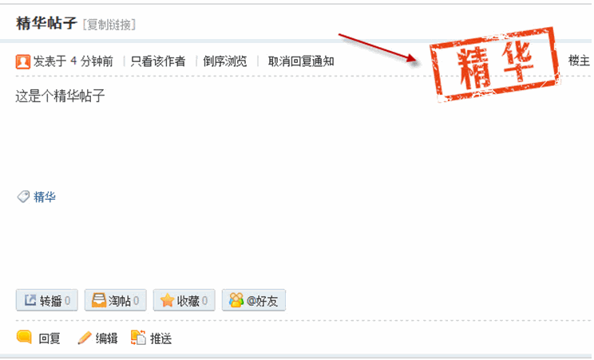
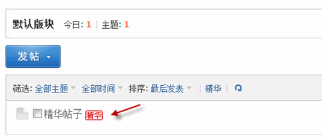
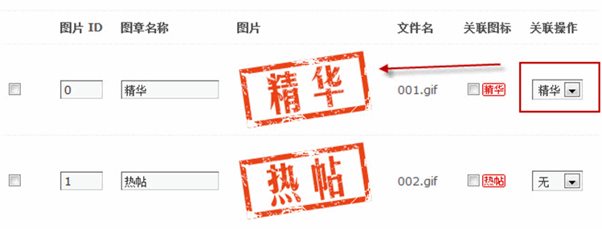
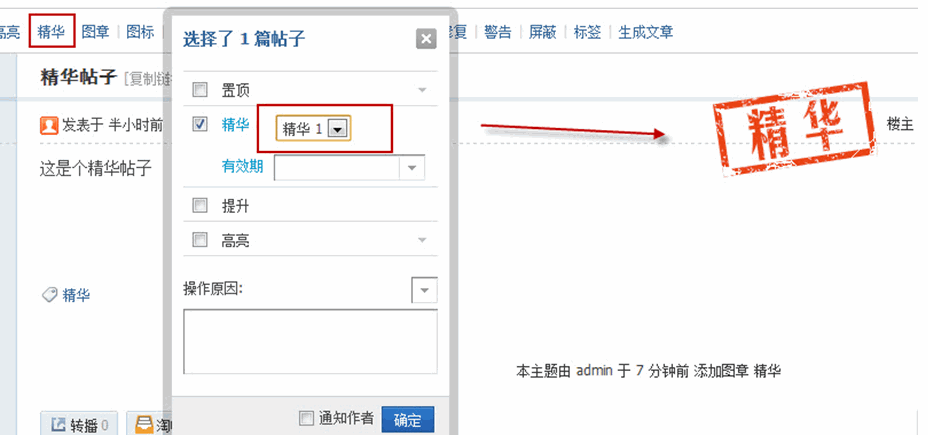
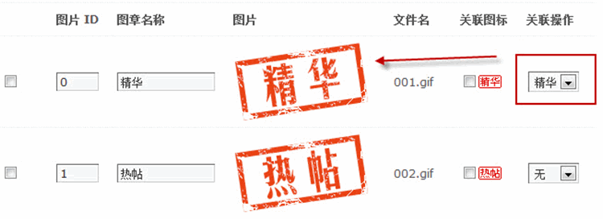

主题鉴定
主题鉴定图章可以在帖子主题内显示一个图章，使帖子显示出不同或者特殊性，使得看帖更加具有趣味性，同时还可以在主题列表中显示指定的图标，使帖子更加吸引眼球。
操作路径：【后台】=>【界面】=>【主题鉴定】
一、图章和图标的使用
给主题添加图章有两种方式
1、直接通过“图章”选项给主题添加图章
使用管理组的账号，在帖子上方的可以看到“图章”选项，点击后选择要添加的图章即可。
添加了图章后的主题显示效果如下：
如果在该图章中设置了关联图标，在设置了主题图章的同时，在版块列表里，该主题的标题后面会同时显示关联图标，如下图所示：
2、通过关联操作给主题添加图章
设置了关联操作后，以“精华”为例，当把这个主题设置成精华帖后，该主题就会自动打上“精华”字样的图章，而不用再去手动添加图章。
 二、添加图章和图标
添加图章和图标时，首先要将做好的图章和图标文件上传到 static/image/stamp/ 目录下，图章大小建议设置为：148*88 的 gif 图片，图标大小建议为 25*14 的 gif 图片。
上传完成后，在【界面】=>【主题鉴定】=> 【添加】中即会显示出新上传的图章和图标图片，填写好图片类型和图片名称，提交后即可使用。
